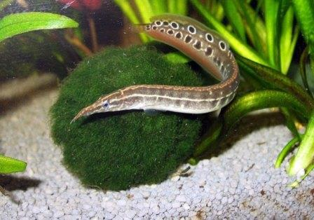
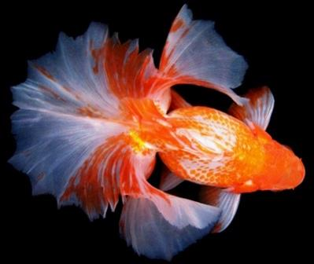
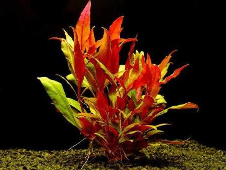

| Статьи | Кталог | Галерея изображений | Регистрация | Контакты |
ХищникиПредставители разных групп и семейств, которых объединяет хищнический образ жизни. Однако, не смотря на свою плотоядность, многих из них вполне возможно содержать вместе с другими относительно крупными рыбами. Читать далее |
 |
Золотые рыбкиПростые караси, которые за сотни лет искусственной селекции изменились до неузнаваемости (окраска, размер, форма тела и плавников). Селекция продолжается по сей день, поэтому количество новых форм постоянно увеличивается. Считаются самыми известными аквариумными рыбками и входят в число наиболее простых в содержании. Читать далее |
 |
Растения для аквариумовРастения для пресноводных аквариумов происходят преимущественно из тропиков, произрастая в неглубоких водоёмах или на болотах. Не все эти растения являются истинно водными, большинство растёт в очень влажных местах или частично погружёнными в воду. Однако, в домашних аквариумах успешно адаптируются к иным условиям. Читать далее |
 |